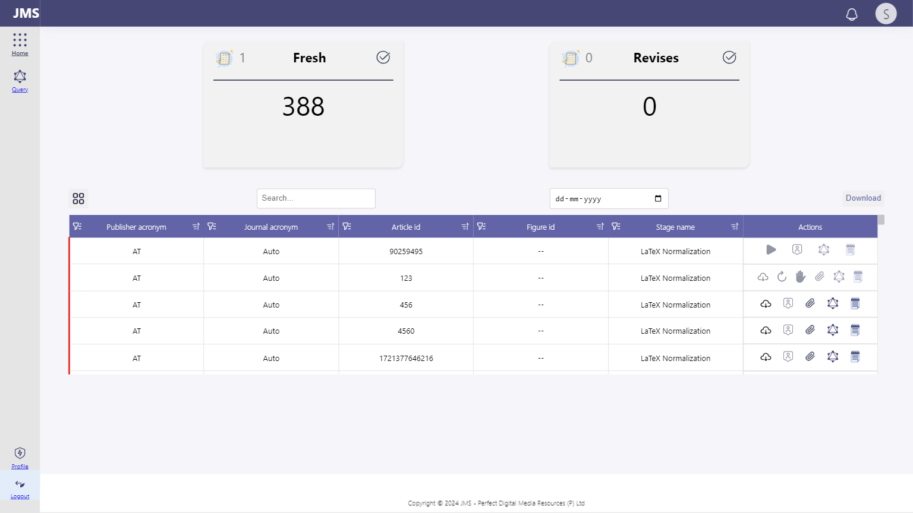
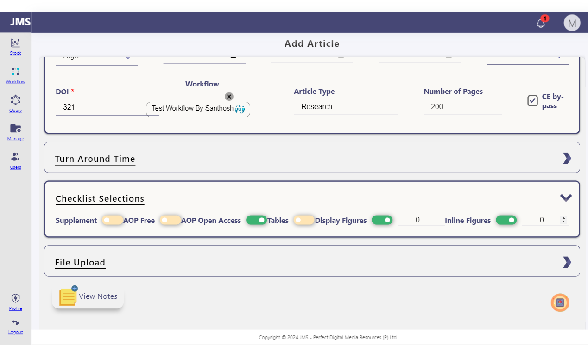
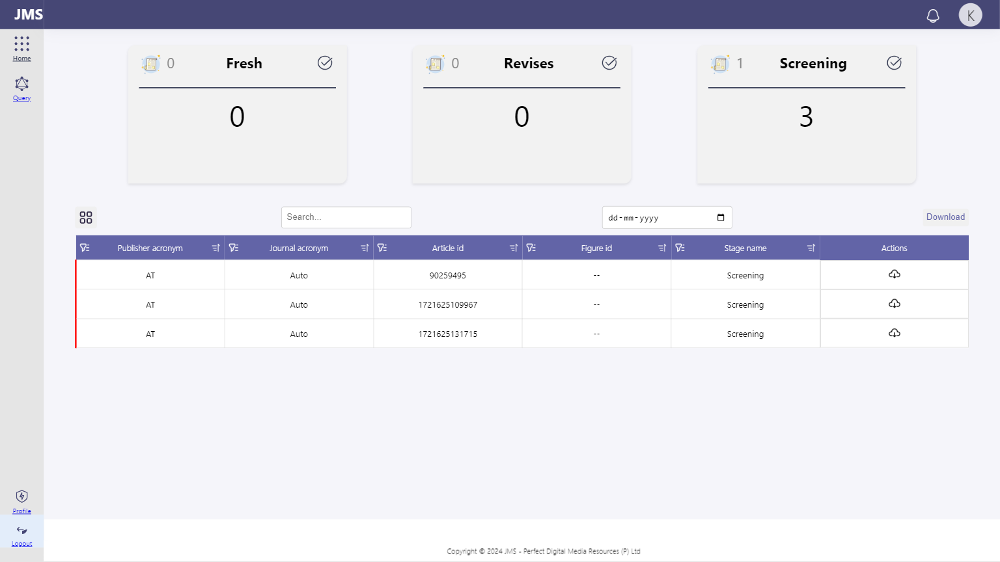

-
JMS-66,Verify the quicklinks displays all three icons (Add Publisher, Journal, Article) and user can navigate to respective pages correctly - verify this on PM login
6:57:02 PM / 00:00:06:920 Pass
JMS-66,Verify the quicklinks displays all three icons (Add Publisher, Journal, Article) and user can navigate to respective pages correctly - verify this on PM login
08.19.2024 6:57:02 PM 08.19.2024 6:57:09 PM 00:00:06:920 · #test-id=1QuickLinksStatus Timestamp Details Info 6:57:03 PM Login with valid credential for manager Info 6:57:03 PM click quick link option Info 6:57:07 PM add publisher,add journal,add article displayed sucessfully Pass 6:57:07 PM Test Passed Info 6:57:09 PM Trace saved: traces/NavigatetoBaseIcon.zip -
verifyhometitle
6:57:02 PM / 00:00:03:175 Pass
verifyhometitle
08.19.2024 6:57:02 PM 08.19.2024 6:57:06 PM 00:00:03:175 · #test-id=2Sakthi HomePageTestsStatus Timestamp Details Info 6:57:03 PM Login successfully Info 6:57:03 PM verifing the title Info 6:57:03 PM Title expected as LMS Info 6:57:04 PM JMS right Pass 6:57:04 PM Test Passed Info 6:57:06 PM Trace saved: traces/verifyhometitle.zip -
Ensure navigation of Form navigates to form filling page of article
6:57:05 PM / 00:00:03:591 Pass
Ensure navigation of Form navigates to form filling page of article
08.19.2024 6:57:05 PM 08.19.2024 6:57:09 PM 00:00:03:591 · #test-id=3Status Timestamp Details Pass 6:57:08 PM Test Passed Info 6:57:09 PM Trace saved: traces/navigatetoaddarticle.zip -
verifyurl
6:57:06 PM / 00:00:00:954 Pass
verifyurl
08.19.2024 6:57:06 PM 08.19.2024 6:57:07 PM 00:00:00:954 · #test-id=4Sakthi HomePageTestsStatus Timestamp Details Info 6:57:06 PM Login successfully Info 6:57:06 PM verifing the url Info 6:57:06 PM url expected as https://pdmrindia.co.in/tester/LMS/auth/signin Info 6:57:06 PM http://192.168.1.39:3002/jms/stock is right Pass 6:57:06 PM Test Passed Info 6:57:07 PM Trace saved: traces/verifyurl.zip -
verifyIconIsDisplayed
6:57:07 PM / 00:00:00:411 Pass
verifyIconIsDisplayed
08.19.2024 6:57:07 PM 08.19.2024 6:57:07 PM 00:00:00:411 · #test-id=5Sakthi HomePageTestsStatus Timestamp Details Info 6:57:07 PM verify icon is display or not Info 6:57:07 PM verify icon is displayed Pass 6:57:07 PM Test Passed Info 6:57:07 PM Trace saved: traces/verifyIconIsDisplayed.zip -
Verifying Navigating to the Add Publisher Page successfully
6:57:08 PM / 00:00:01:752 Pass
Verifying Navigating to the Add Publisher Page successfully
08.19.2024 6:57:08 PM 08.19.2024 6:57:09 PM 00:00:01:752 · #test-id=6Sakthi AddPublisherStatus Timestamp Details Info 6:57:08 PM Clicking the Base icon Info 6:57:08 PM Clicking the add publisher icon Info 6:57:09 PM Navigated successfully to the addpublisher page Pass 6:57:09 PM Test Passed Info 6:57:09 PM Trace saved: traces/NavigateToAddPubIcon.zip -
Verify the quicklinks displays only Add article for Login user, Add Pub,Journal is not available for login user
6:57:09 PM / 00:00:04:242 Pass
Verify the quicklinks displays only Add article for Login user, Add Pub,Journal is not available for login user
08.19.2024 6:57:09 PM 08.19.2024 6:57:14 PM 00:00:04:242 · #test-id=7QuickLinksStatus Timestamp Details Info 6:57:09 PM login with valid credential for login Info 6:57:09 PM verify login user quick link option is visible and clickable Info 6:57:09 PM verify quick link displayed only add article icon Info 6:57:12 PM Only add article icon is displayed Pass 6:57:12 PM Test Passed Info 6:57:14 PM Trace saved: traces/EnsureLoginUserHasOnlyAddArticleIcon.zip -
JMS-67,Verify apart from PM, login users, quicklinks is not available for other users
6:57:14 PM / 00:00:01:416 Pass
JMS-67,Verify apart from PM, login users, quicklinks is not available for other users
08.19.2024 6:57:14 PM 08.19.2024 6:57:15 PM 00:00:01:416 · #test-id=8QuickLinksStatus Timestamp Details Info 6:57:14 PM Login with valid credential for manager Info 6:57:14 PM Verify Quik links icon is showing for manager Info 6:57:14 PM Expected like quicklink icon is not showing for manager login Pass 6:57:14 PM Test Passed Info 6:57:15 PM Trace saved: traces/EnsureManagerNotHaveQuickLinks.zip -
JMS-68 verify Quicklinks is available from that page and working fine from every page
6:57:15 PM / 00:00:12:623 Pass
JMS-68 verify Quicklinks is available from that page and working fine from every page
08.19.2024 6:57:15 PM 08.19.2024 6:57:28 PM 00:00:12:623 · #test-id=9QuickLinksStatus Timestamp Details Info 6:57:15 PM Login valid credential for Projectmanager Info 6:57:15 PM add publisher Info 6:57:15 PM Click the quicklink icon Info 6:57:15 PM Click the journal icon Info 6:57:15 PM add journal Info 6:57:15 PM Click the quicklink icon Info 6:57:15 PM Click the article icon Info 6:57:15 PM add article Info 6:57:24 PM quicklink is Working fine Pass 6:57:24 PM Test Passed Info 6:57:28 PM Trace saved: traces/VerifyQuickLinkIsWorkingINFlow.zip -
Upon providing valid inputs, Article can be added - need to be listed
6:57:15 PM / 00:00:44:109 Fail
Upon providing valid inputs, Article can be added - need to be listed
08.19.2024 6:57:15 PM 08.19.2024 6:57:59 PM 00:00:44:109 · #test-id=10Sakthi addarticleStatus Timestamp Details Info 6:57:15 PM Parameter: Auto(AT) Info 6:57:15 PM Parameter: 902594958 Info 6:57:15 PM Parameter: ArticleAutomationTest Info 6:57:15 PM Parameter: 1730 Info 6:57:15 PM Parameter: Test Workflow By Santhosh Info 6:57:15 PM Click on the Add Article Info 6:57:15 PM Enter all the mandatory data Info 6:57:15 PM Click the AddButton Info 6:57:15 PM verifing article is added in article view Fail 6:57:58 PM Test Failed Fail 6:57:58 PM Info 6:57:59 PM Trace saved: traces/addarticle.zip -
JMS-118:verifying the add publisher functionality by adding with the copy of general data
6:57:18 PM / 00:00:19:342 Pass
JMS-118:verifying the add publisher functionality by adding with the copy of general data
08.19.2024 6:57:18 PM 08.19.2024 6:57:37 PM 00:00:19:342 · #test-id=11Sakthi AddPublisherStatus Timestamp Details Info 6:57:18 PM Parameter: T Info 6:57:18 PM Parameter: test Info 6:57:18 PM Enter all the input which are mandatory Info 6:57:18 PM verifying publiher is added Info 6:57:36 PM Publisher added successfully Pass 6:57:36 PM Test Passed Info 6:57:37 PM Trace saved: traces/AddPublisherWithCopyTatData.zip -
JMS-118:verifying the add publisher functionality by adding with the copy of general data
6:57:41 PM / 00:00:07:732 Pass
JMS-118:verifying the add publisher functionality by adding with the copy of general data
08.19.2024 6:57:41 PM 08.19.2024 6:57:49 PM 00:00:07:732 · #test-id=12Sakthi AddPublisherStatus Timestamp Details Info 6:57:41 PM Parameter: ML Info 6:57:41 PM Parameter: manual Info 6:57:41 PM Enter all the input which are mandatory Info 6:57:41 PM verifying publiher is added Info 6:57:48 PM Publisher added successfully Pass 6:57:48 PM Test Passed Info 6:57:49 PM Trace saved: traces/AddPublisherWithCopyTatData.zip -
JMS-118:verifying the add publisher functionality by adding with the copy of general data
6:57:53 PM / 00:00:09:374 Pass
JMS-118:verifying the add publisher functionality by adding with the copy of general data
08.19.2024 6:57:53 PM 08.19.2024 6:58:02 PM 00:00:09:374 · #test-id=13Sakthi AddPublisherStatus Timestamp Details Info 6:57:53 PM Parameter: A Info 6:57:53 PM Parameter: Automation Info 6:57:53 PM Enter all the input which are mandatory Info 6:57:53 PM verifying publiher is added Info 6:58:01 PM Publisher added successfully Pass 6:58:01 PM Test Passed Info 6:58:02 PM Trace saved: traces/AddPublisherWithCopyTatData.zip -
Upon providing valid inputs, Article can be added - need to be listed
6:58:01 PM / 00:00:46:012 Pass
Upon providing valid inputs, Article can be added - need to be listed
08.19.2024 6:58:01 PM 08.19.2024 6:58:47 PM 00:00:46:012 · #test-id=14Sakthi addarticleStatus Timestamp Details Info 6:58:01 PM Parameter: Auto(AT) Info 6:58:01 PM Parameter: 902594958 Info 6:58:01 PM Parameter: ArticleAutomationTest Info 6:58:01 PM Parameter: 1730 Info 6:58:01 PM Parameter: Test Workflow By Santhosh Info 6:58:01 PM Click on the Add Article Info 6:58:01 PM Enter all the mandatory data Info 6:58:01 PM Click the AddButton Info 6:58:01 PM verifing article is added in article view Info 6:58:44 PM article is added in article view Pass 6:58:44 PM Test Passed Info 6:58:47 PM Trace saved: traces/addarticle.zip -
JMS-118:verifying the add publisher functionality by adding with the copy of general data
6:58:08 PM / 00:00:10:264 Pass
JMS-118:verifying the add publisher functionality by adding with the copy of general data
08.19.2024 6:58:08 PM 08.19.2024 6:58:19 PM 00:00:10:264 · #test-id=15Sakthi AddPublisherStatus Timestamp Details Info 6:58:08 PM Parameter: Se Info 6:58:08 PM Parameter: Selenium Info 6:58:08 PM Enter all the input which are mandatory Info 6:58:08 PM verifying publiher is added Info 6:58:18 PM Publisher added successfully Pass 6:58:18 PM Test Passed Info 6:58:19 PM Trace saved: traces/AddPublisherWithCopyTatData.zip -
JMS-118:verifying the add publisher functionality by adding with the copy of general data
6:58:23 PM / 00:00:09:584 Pass
JMS-118:verifying the add publisher functionality by adding with the copy of general data
08.19.2024 6:58:23 PM 08.19.2024 6:58:33 PM 00:00:09:584 · #test-id=16Sakthi AddPublisherStatus Timestamp Details Info 6:58:23 PM Parameter: PRT Info 6:58:23 PM Parameter: Playwright Info 6:58:23 PM Enter all the input which are mandatory Info 6:58:23 PM verifying publiher is added Info 6:58:32 PM Publisher added successfully Pass 6:58:32 PM Test Passed Info 6:58:33 PM Trace saved: traces/AddPublisherWithCopyTatData.zip -
validate the AddPublisher Functionality by add all the TAT Data without copy
6:58:38 PM / 00:00:15:965 Pass
validate the AddPublisher Functionality by add all the TAT Data without copy
08.19.2024 6:58:38 PM 08.19.2024 6:58:54 PM 00:00:15:965 · #test-id=17Sakthi AddPublisherStatus Timestamp Details Info 6:58:38 PM Parameter: AT Info 6:58:38 PM Parameter: AllTat Info 6:58:38 PM Parameter: sakthi@pdmrindia.com Info 6:58:38 PM Parameter: Graphics is not for this publisher Info 6:58:38 PM Parameter: Chennai Info 6:58:38 PM Parameter: FTp name Info 6:58:38 PM Parameter: Ftp Password Info 6:58:38 PM Parameter: ./jms/publisher Info 6:58:38 PM Parameter: 1 Info 6:58:38 PM Parameter: 1 Info 6:58:38 PM Parameter: 1 Info 6:58:38 PM Parameter: 1 Info 6:58:38 PM Parameter: 1 Info 6:58:38 PM Parameter: 1 Info 6:58:38 PM Parameter: 1 Info 6:58:38 PM Parameter: 1 Info 6:58:38 PM Parameter: 1 Info 6:58:38 PM Parameter: 1 Info 6:58:38 PM Parameter: 1 Info 6:58:38 PM Parameter: 1 Info 6:58:38 PM Parameter: 1 Info 6:58:38 PM Parameter: 1 Info 6:58:38 PM Parameter: 1 Info 6:58:38 PM Parameter: 1 Info 6:58:38 PM Parameter: 1 Info 6:58:38 PM Parameter: 1 Info 6:58:38 PM Parameter: 1 Info 6:58:38 PM Parameter: 1 Info 6:58:38 PM Parameter: 1 Info 6:58:38 PM Parameter: 1 Info 6:58:38 PM Parameter: 1 Info 6:58:38 PM Parameter: 1 Info 6:58:38 PM Parameter: 1 Info 6:58:38 PM Parameter: 1 Info 6:58:38 PM Parameter: 1 Info 6:58:38 PM Parameter: 1 Info 6:58:38 PM Parameter: 1 Info 6:58:38 PM Parameter: 1 Info 6:58:38 PM Parameter: 1 Info 6:58:38 PM Parameter: 1 Info 6:58:38 PM Parameter: 1 Info 6:58:38 PM Parameter: 1 Info 6:58:38 PM Parameter: 1 Info 6:58:38 PM Parameter: 1 Info 6:58:38 PM Parameter: 1 Info 6:58:38 PM Enter all the input which are mandatory Info 6:58:38 PM verifying publiher is added Info 6:58:52 PM Publisher added successfully Pass 6:58:52 PM Test Passed Info 6:58:54 PM Trace saved: traces/AddPublisherWithAllInputData.zip -
JMS:13-Ensure three options to add article - Form, Upload, SFTP all are available
6:58:50 PM / 00:00:38:155 Fail
JMS:13-Ensure three options to add article - Form, Upload, SFTP all are available
08.19.2024 6:58:50 PM 08.19.2024 6:59:28 PM 00:00:38:155 · #test-id=18Sakthi addarticle
Status Timestamp Details Info 6:58:50 PM Click on the Add Article Info 6:58:50 PM Verifing Whether the upload icon ,form icon,Clientftp icon is visible Fail 6:59:06 PM Test Failed Fail 6:59:06 PM Info 6:59:28 PM Trace saved: traces/ensureThreeOptIsVisible.zip -
JMS-127:validate the all the FastTrack and General TAT values are equal which is imported from general
6:58:58 PM / 00:00:07:459 Pass
JMS-127:validate the all the FastTrack and General TAT values are equal which is imported from general
08.19.2024 6:58:58 PM 08.19.2024 6:59:06 PM 00:00:07:459 · #test-id=19Sakthi AddPublisherStatus Timestamp Details Info 6:58:58 PM Parameter: mms1 Info 6:58:58 PM Parameter: Testing Info 6:58:58 PM Parameter: sakthi@pdmrindia.com Info 6:58:58 PM Parameter: Graphics is not for this publisher Info 6:58:58 PM Parameter: Chennai Info 6:58:58 PM Parameter: FTp name Info 6:58:58 PM Parameter: Ftp Password Info 6:58:58 PM Parameter: ./jms/publisher Info 6:58:58 PM Parameter: 1.1 Info 6:58:58 PM Parameter: 1 Info 6:58:58 PM Parameter: 1 Info 6:58:58 PM Parameter: 1 Info 6:58:58 PM Parameter: 1 Info 6:58:58 PM Parameter: 1 Info 6:58:58 PM Parameter: 1 Info 6:58:58 PM Parameter: 1 Info 6:58:58 PM Parameter: 1 Info 6:58:58 PM Parameter: 1 Info 6:58:58 PM Parameter: 1 Info 6:58:58 PM Parameter: 1 Info 6:58:58 PM Parameter: 1 Info 6:58:58 PM Parameter: 1 Info 6:58:58 PM Parameter: 1 Info 6:58:58 PM Parameter: 1 Info 6:58:58 PM Parameter: 1 Info 6:58:58 PM Parameter: 1 Info 6:58:58 PM Parameter: 1 Info 6:58:58 PM Enter all the input which are mandatory Info 6:58:58 PM click the copy tat icon Info 6:58:58 PM verifing the Latexduedate for fasttrack which is imported from general Info 6:59:05 PM Value fetched successfully to Fast Track and also verification is wright! Info 6:59:05 PM Values are fetched successfully to Fast Track and also values are equal Pass 6:59:05 PM Test Passed Info 6:59:06 PM Trace saved: traces/VerifyAcronymCopyTatValue.zip -
JMS-119 :validate the error alert is showing while adding with neither duplicate acro or duplicate publisher
6:59:09 PM / 00:00:14:917 Pass
JMS-119 :validate the error alert is showing while adding with neither duplicate acro or duplicate publisher
08.19.2024 6:59:09 PM 08.19.2024 6:59:24 PM 00:00:14:917 · #test-id=20Sakthi AddPublisherStatus Timestamp Details Info 6:59:09 PM Parameter: T Info 6:59:09 PM Parameter: Automation Info 6:59:09 PM verify duplicate alert is showing When add a duplicate pub Info 6:59:22 PM publisher and Acro name should not duplicate Pass 6:59:22 PM Test Passed Info 6:59:24 PM Trace saved: traces/VerifyAlertIsShowingWhenAddDuplicateInPubAndAcro.zip -
JMS-119 :validate the error alert is showing while adding with neither duplicate acro or duplicate publisher
6:59:27 PM / 00:00:12:596 Pass
JMS-119 :validate the error alert is showing while adding with neither duplicate acro or duplicate publisher
08.19.2024 6:59:27 PM 08.19.2024 6:59:39 PM 00:00:12:596 · #test-id=21Sakthi AddPublisherStatus Timestamp Details Info 6:59:27 PM Parameter: A Info 6:59:27 PM Parameter: Selenium Info 6:59:27 PM verify duplicate alert is showing When add a duplicate pub Info 6:59:38 PM publisher and Acro name should not duplicate Pass 6:59:38 PM Test Passed Info 6:59:39 PM Trace saved: traces/VerifyAlertIsShowingWhenAddDuplicateInPubAndAcro.zip -
JMS-15 : verify article duplication is prevented across PM and Login
6:59:31 PM / 00:00:31:586 Fail
JMS-15 : verify article duplication is prevented across PM and Login
08.19.2024 6:59:31 PM 08.19.2024 7:00:02 PM 00:00:31:586 · #test-id=22Sakthi addarticle
Status Timestamp Details Info 6:59:31 PM Parameter: Auto(AT) Info 6:59:31 PM Parameter: 902594958 Info 6:59:31 PM Parameter: ArticleAutomationTest Info 6:59:31 PM Parameter: 1730 Info 6:59:31 PM Parameter: Test Workflow By Santhosh Fail 7:00:00 PM Test Failed Fail 7:00:00 PM Info 7:00:02 PM Trace saved: traces/AddArticle.zip -
JMS-119 :validate the error alert is showing while adding with neither duplicate acro or duplicate publisher
6:59:43 PM / 00:00:13:406 Pass
JMS-119 :validate the error alert is showing while adding with neither duplicate acro or duplicate publisher
08.19.2024 6:59:43 PM 08.19.2024 6:59:56 PM 00:00:13:406 · #test-id=23Sakthi AddPublisherStatus Timestamp Details Info 6:59:43 PM Parameter: Se Info 6:59:43 PM Parameter: Selenium Info 6:59:43 PM verify duplicate alert is showing When add a duplicate pub Info 6:59:54 PM publisher and Acro name should not duplicate Pass 6:59:54 PM Test Passed Info 6:59:56 PM Trace saved: traces/VerifyAlertIsShowingWhenAddDuplicateInPubAndAcro.zip -
JMS:222-validate image is added after created a Publisher
6:59:59 PM / 00:00:12:387 Pass
JMS:222-validate image is added after created a Publisher
08.19.2024 6:59:59 PM 08.19.2024 7:00:11 PM 00:00:12:387 · #test-id=24Sakthi AddPublisherStatus Timestamp Details Info 6:59:59 PM Parameter: mg Info 6:59:59 PM Parameter: magnesium Info 6:59:59 PM Parameter: Automation.jpg Info 6:59:59 PM Adding publisher Info 6:59:59 PM Verifing the uploaded logo is correctly visible in EditPub Page Info 7:00:10 PM logo is correctly Displayed in EditPub Page Pass 7:00:10 PM Test Passed Info 7:00:11 PM Trace saved: traces/verifyAddedPublisherLogo.zip -
JMS-15 : verify article duplication is prevented across PM and Login
7:00:04 PM / 00:00:10:333 Fail
JMS-15 : verify article duplication is prevented across PM and Login
08.19.2024 7:00:04 PM 08.19.2024 7:00:14 PM 00:00:10:333 · #test-id=25Sakthi addarticle
Status Timestamp Details Info 7:00:04 PM Parameter: Auto(AT) Info 7:00:04 PM Parameter: 902594958 Info 7:00:04 PM Parameter: ArticleAutomationTest Info 7:00:04 PM Parameter: 1730 Info 7:00:04 PM Parameter: Test Workflow By Santhosh Fail 7:00:13 PM Test Failed Fail 7:00:13 PM Info 7:00:14 PM Trace saved: traces/AddArticle.zip -
verify the update functionality
7:00:13 PM / 00:00:19:856 Pass
verify the update functionality
08.19.2024 7:00:13 PM 08.19.2024 7:00:33 PM 00:00:19:856 · #test-id=26Sakthi AddPublisherStatus Timestamp Details Info 7:00:13 PM Publisher added successfully Info 7:00:13 PM verifing the updated field in Edit publisher Info 7:00:32 PM Publisher details updated successfully Pass 7:00:32 PM Test Passed Info 7:00:33 PM Trace saved: traces/verifyupdatedpublisher.zip -
JMS-14 : Article can be added by both PM and LOGIN user. Other users should not be able to add article
7:00:16 PM / 00:00:47:359 Pass
JMS-14 : Article can be added by both PM and LOGIN user. Other users should not be able to add article
08.19.2024 7:00:16 PM 08.19.2024 7:01:04 PM 00:00:47:359 · #test-id=27Sakthi addarticleStatus Timestamp Details Info 7:00:16 PM Parameter: Auto(AT) Info 7:00:16 PM Parameter: 12300000 Info 7:00:16 PM Parameter: ArticleAutomationTest Info 7:00:16 PM Parameter: 321 Info 7:00:16 PM Parameter: Test Workflow By Santhosh Info 7:00:16 PM Parameter: 7000 Info 7:00:16 PM Parameter: 7000 Info 7:00:16 PM Parameter: AllTat Info 7:00:16 PM Parameter: Auto Pass 7:00:57 PM Test Passed Info 7:01:04 PM Trace saved: traces/VerifyAddArticleAcess.zip -
JMS-122:Change the logo and verify the change in Pub. view
7:00:38 PM / 00:00:17:083 Pass
JMS-122:Change the logo and verify the change in Pub. view
08.19.2024 7:00:38 PM 08.19.2024 7:00:55 PM 00:00:17:083 · #test-id=28Sakthi AddPublisherStatus Timestamp Details Info 7:00:38 PM Adding Publisher Info 7:00:38 PM Updating the Logo Info 7:00:53 PM Image reuploaded successfully and correctly viewed in the publisher view Pass 7:00:53 PM Test Passed Info 7:00:55 PM Trace saved: traces/verifyupdatedlogo.zip -
JMS-123:Verify the created publishers are available while creating the Journals
7:01:00 PM / 00:00:15:854 Pass
JMS-123:Verify the created publishers are available while creating the Journals
08.19.2024 7:01:00 PM 08.19.2024 7:01:15 PM 00:00:15:854 · #test-id=29Sakthi AddPublisherStatus Timestamp Details Info 7:01:00 PM Adding Publisher Info 7:01:00 PM Verifing the Added Publisher is displayed While adding a journal Info 7:01:14 PM Added pub is available While adding a journal Pass 7:01:14 PM Test Passed Info 7:01:15 PM Trace saved: traces/VerifyPubAvailInAddJournal.zip -
JMS-14 : Article can be added by both PM and LOGIN user. Other users should not be able to add article
7:01:05 PM / 00:00:46:141 Pass
JMS-14 : Article can be added by both PM and LOGIN user. Other users should not be able to add article
08.19.2024 7:01:05 PM 08.19.2024 7:01:52 PM 00:00:46:141 · #test-id=30Sakthi addarticleStatus Timestamp Details Info 7:01:05 PM Parameter: Auto(AT) Info 7:01:05 PM Parameter: 45600000 Info 7:01:05 PM Parameter: ArticleAutomationTest Info 7:01:05 PM Parameter: 321 Info 7:01:05 PM Parameter: Test Workflow By Santhosh Info 7:01:05 PM Parameter: 1010 Info 7:01:05 PM Parameter: 1010 Info 7:01:05 PM Parameter: AllTat Info 7:01:05 PM Parameter: Auto Pass 7:01:49 PM Test Passed Info 7:01:52 PM Trace saved: traces/VerifyAddArticleAcess.zip -
Need to ensure the inputs days in TAT in decimal should be allowed (0.8,0.9,1.2)
7:01:19 PM / 00:00:42:476 Fail
Need to ensure the inputs days in TAT in decimal should be allowed (0.8,0.9,1.2)
08.19.2024 7:01:19 PM 08.19.2024 7:02:02 PM 00:00:42:476 · #test-id=31Sakthi AddPublisher
Status Timestamp Details Info 7:01:19 PM Parameter: mms1 Info 7:01:19 PM Parameter: Testing Info 7:01:19 PM Parameter: sakthi@pdmrindia.com Info 7:01:19 PM Parameter: Graphics is not for this publisher Info 7:01:19 PM Parameter: Chennai Info 7:01:19 PM Parameter: FTp name Info 7:01:19 PM Parameter: Ftp Password Info 7:01:19 PM Parameter: ./jms/publisher Info 7:01:19 PM Parameter: 1.1 Info 7:01:19 PM Parameter: 1 Info 7:01:19 PM Parameter: 1 Info 7:01:19 PM Parameter: 1 Info 7:01:19 PM Parameter: 1 Info 7:01:19 PM Parameter: 1 Info 7:01:19 PM Parameter: 1 Info 7:01:19 PM Parameter: 1 Info 7:01:19 PM Parameter: 1 Info 7:01:19 PM Parameter: 1 Info 7:01:19 PM Parameter: 1 Info 7:01:19 PM Parameter: 1 Info 7:01:19 PM Parameter: 1 Info 7:01:19 PM Parameter: 1 Info 7:01:19 PM Parameter: 1 Info 7:01:19 PM Parameter: 1 Info 7:01:19 PM Parameter: 1 Info 7:01:19 PM Parameter: 1 Info 7:01:19 PM Parameter: 1 Fail 7:01:59 PM Test Failed Fail 7:01:59 PM Info 7:02:02 PM Trace saved: traces/verifyTatacceptsDecimal.zip -
JMS-39 : On/OFF any option is applicable for all entries
7:01:53 PM / 00:00:17:419 Pass
JMS-39 : On/OFF any option is applicable for all entries
08.19.2024 7:01:53 PM 08.19.2024 7:02:10 PM 00:00:17:419 · #test-id=32Sakthi addarticleStatus Timestamp Details Pass 7:02:09 PM Test Passed Info 7:02:10 PM Trace saved: traces/veriychecklistradiobuttonfunctionality.zip -
JMS-131:Files added now should be in Latest files, unless moved to archive
7:02:06 PM / 00:00:01:110 Pass
JMS-131:Files added now should be in Latest files, unless moved to archive
08.19.2024 7:02:06 PM 08.19.2024 7:02:08 PM 00:00:01:110 · #test-id=33Sakthi AddPublisherStatus Timestamp Details Info 7:02:07 PM verifing the uploaded files is showing in Recent files Info 7:02:07 PM uploaded files are showing in the Recent files Pass 7:02:07 PM Test Passed Info 7:02:08 PM Trace saved: traces/VerifyFileInRecentUntilMoveTOArchieve.zip -
JMS:132-Verify other than .sty files cant be uploaded in template
7:02:12 PM / 00:00:01:032 Pass
JMS:132-Verify other than .sty files cant be uploaded in template
08.19.2024 7:02:12 PM 08.19.2024 7:02:13 PM 00:00:01:032 · #test-id=34Sakthi AddPublisherStatus Timestamp Details Info 7:02:12 PM Parameter: sample.doc Info 7:02:12 PM verifing add pub with other than .sty file in sty template field Info 7:02:13 PM Other than .sty Extension is not accepted Pass 7:02:13 PM Test Passed Info 7:02:13 PM Trace saved: traces/VerifyStypeUploadRestriction.zip -
JMS:40-Article with no images should not move to Graphics Department
7:02:13 PM / 00:00:32:738 Fail
JMS:40-Article with no images should not move to Graphics Department
08.19.2024 7:02:13 PM 08.19.2024 7:02:45 PM 00:00:32:738 · #test-id=35Sakthi addarticleStatus Timestamp Details Info 7:02:13 PM Parameter: Auto(AT) Info 7:02:13 PM Parameter: 1230000000 Info 7:02:13 PM Parameter: ArticleAutomationTest Info 7:02:13 PM Parameter: 321 Info 7:02:13 PM Parameter: Test Workflow By Santhosh Info 7:02:13 PM Parameter: 1948 Info 7:02:13 PM Parameter: 1948 Info 7:02:13 PM Parameter: 5 Info 7:02:13 PM Parameter: 5 Fail 7:02:36 PM Test Failed Fail 7:02:36 PM Info 7:02:45 PM Trace saved: traces/verifyarticlemovingToLatex.zip -
JMS:132-Verify other than .sty files cant be uploaded in template
7:02:18 PM / 00:00:01:476 Pass
JMS:132-Verify other than .sty files cant be uploaded in template
08.19.2024 7:02:18 PM 08.19.2024 7:02:20 PM 00:00:01:476 · #test-id=36Sakthi AddPublisherStatus Timestamp Details Info 7:02:18 PM Parameter: guidelines.docx Info 7:02:18 PM verifing add pub with other than .sty file in sty template field Info 7:02:19 PM Other than .sty Extension is not accepted Pass 7:02:19 PM Test Passed Info 7:02:20 PM Trace saved: traces/VerifyStypeUploadRestriction.zip -
JMS:132-Verify other than .sty files cant be uploaded in template
7:02:26 PM / 00:00:01:253 Pass
JMS:132-Verify other than .sty files cant be uploaded in template
08.19.2024 7:02:26 PM 08.19.2024 7:02:27 PM 00:00:01:253 · #test-id=37Sakthi AddPublisherStatus Timestamp Details Info 7:02:26 PM Parameter: Ai.jpg Info 7:02:26 PM verifing add pub with other than .sty file in sty template field Info 7:02:27 PM Other than .sty Extension is not accepted Pass 7:02:27 PM Test Passed Info 7:02:27 PM Trace saved: traces/VerifyStypeUploadRestriction.zip -
JMS:133-Verify only doc,docx,pdf can be uploaded in guidelines document, other formats must not be allowed
7:02:32 PM / 00:00:00:772 Pass
JMS:133-Verify only doc,docx,pdf can be uploaded in guidelines document, other formats must not be allowed
08.19.2024 7:02:32 PM 08.19.2024 7:02:33 PM 00:00:00:772 · #test-id=38Sakthi AddPublisherStatus Timestamp Details Info 7:02:32 PM Parameter: Ai.jpg Info 7:02:32 PM verifing the Guideline file extension alert in add pub Info 7:02:33 PM Alert is displayed Pass 7:02:33 PM Test Passed Info 7:02:33 PM Trace saved: traces/verifyguidelinesuploadverification.zip -
JMS:133-Verify only doc,docx,pdf can be uploaded in guidelines document, other formats must not be allowed
7:02:37 PM / 00:00:01:258 Pass
JMS:133-Verify only doc,docx,pdf can be uploaded in guidelines document, other formats must not be allowed
08.19.2024 7:02:37 PM 08.19.2024 7:02:38 PM 00:00:01:258 · #test-id=39Sakthi AddPublisherStatus Timestamp Details Info 7:02:37 PM Parameter: image.jpeg Info 7:02:37 PM verifing the Guideline file extension alert in add pub Info 7:02:38 PM Alert is displayed Pass 7:02:38 PM Test Passed Info 7:02:38 PM Trace saved: traces/verifyguidelinesuploadverification.zip -
JMS:134-Ensure there is no limits for no. of files uploaded for both template and Gd.Lines document
7:02:44 PM / 00:00:00:748 Pass
JMS:134-Ensure there is no limits for no. of files uploaded for both template and Gd.Lines document
08.19.2024 7:02:44 PM 08.19.2024 7:02:45 PM 00:00:00:748 · #test-id=40Sakthi AddPublisherStatus Timestamp Details Info 7:02:44 PM Adding publisher with more no of doc Info 7:02:45 PM Adding publisher with more no of doc successfully Pass 7:02:45 PM Test Passed Info 7:02:45 PM Trace saved: traces/verifyisdocumentUploadCanUploadMore.zip -
JMS-41:Article with images should move to Graphics Department
7:02:48 PM / 00:00:32:950 Fail
JMS-41:Article with images should move to Graphics Department
08.19.2024 7:02:48 PM 08.19.2024 7:03:21 PM 00:00:32:950 · #test-id=41Sakthi addarticleStatus Timestamp Details Info 7:02:48 PM Parameter: Auto(AT) Info 7:02:48 PM Parameter: 1234 Info 7:02:48 PM Parameter: ArticleAutomationTest Info 7:02:48 PM Parameter: 321 Info 7:02:48 PM Parameter: Test Workflow By Santhosh Info 7:02:48 PM Parameter: 1947 Info 7:02:48 PM Parameter: 1947 Info 7:02:48 PM Parameter: 5 Info 7:02:48 PM Parameter: 5 Fail 7:03:16 PM Test Failed Fail 7:03:16 PM Info 7:03:21 PM Trace saved: traces/verifyarticlemoveToGraphics.zip -
JMS-135:Ensure STY files can be viewed and modified in publisher view
7:02:49 PM / 00:00:28:766 Pass
JMS-135:Ensure STY files can be viewed and modified in publisher view
08.19.2024 7:02:49 PM 08.19.2024 7:03:18 PM 00:00:28:766 · #test-id=42Sakthi AddPublisherStatus Timestamp Details Info 7:02:50 PM Add the publisher Info 7:02:50 PM Updating the styfile Info 7:02:50 PM verifing sty file is updated Pass 7:03:14 PM Test Passed Info 7:03:18 PM Trace saved: traces/verifyISStyDocIsUpdated.zip -
JMS-42 : Article with Graphics - verify the initial flow
7:03:23 PM / 00:00:30:446 Fail
JMS-42 : Article with Graphics - verify the initial flow
08.19.2024 7:03:23 PM 08.19.2024 7:03:54 PM 00:00:30:446 · #test-id=43Sakthi addarticleStatus Timestamp Details Info 7:03:23 PM Parameter: Auto(AT) Info 7:03:23 PM Parameter: 1234 Info 7:03:23 PM Parameter: ArticleAutomationTest Info 7:03:23 PM Parameter: 321 Info 7:03:23 PM Parameter: Test Workflow By Santhosh Info 7:03:23 PM Parameter: 1947 Info 7:03:23 PM Parameter: 1947 Info 7:03:23 PM Parameter: 5 Info 7:03:23 PM Parameter: 5 Info 7:03:23 PM Parameter: 1948 Info 7:03:23 PM Parameter: 1948 Info 7:03:23 PM Add a Article Info 7:03:23 PM verify article is Showing in Latex and Graphics Fail 7:03:49 PM Test Failed Fail 7:03:49 PM Info 7:03:54 PM Trace saved: traces/verifyarticlemoveToGraphicsAndLatex.zip -
Ensure any STY file should be in latest is mandatory. (Need confirmation as it is a template)
7:03:26 PM / 00:00:16:305 Pass
Ensure any STY file should be in latest is mandatory. (Need confirmation as it is a template)
08.19.2024 7:03:26 PM 08.19.2024 7:03:42 PM 00:00:16:305 · #test-id=44Sakthi AddPublisherStatus Timestamp Details Info 7:03:26 PM Adding publisher without the .sty files Info 7:03:26 PM verifing styfile upload alert is showing Pass 7:03:40 PM Test Passed Info 7:03:42 PM Trace saved: traces/IsStyMandatoryAlertIsShowing.zip -
JMS:138-Ensure Files can be moved back and forth from Latest to Archive. Also ensure while creating journal, current list must be fetched
7:03:49 PM / 00:00:21:304 Pass
JMS:138-Ensure Files can be moved back and forth from Latest to Archive. Also ensure while creating journal, current list must be fetched
08.19.2024 7:03:49 PM 08.19.2024 7:04:10 PM 00:00:21:304 · #test-id=45Sakthi AddPublisherStatus Timestamp Details Info 7:03:49 PM Parameter: Resume.pdf Info 7:03:49 PM Parameter: guidelines.docx Info 7:03:49 PM Parameter: sample.doc Info 7:03:49 PM Parameter: test2.docx Info 7:03:49 PM Adding Publisher with archived files Info 7:03:49 PM Verifing archived files are only showing in Edit Pub Info 7:04:07 PM Archived files showing correctly Pass 7:04:07 PM Test Passed Info 7:04:10 PM Trace saved: traces/ISArchiveListIsShowingCorrectFiles.zip -
JMS-112 : One ZIP package is mandatory, without this Article addition should not be done
7:03:56 PM / 00:00:22:784 Pass
JMS-112 : One ZIP package is mandatory, without this Article addition should not be done
08.19.2024 7:03:56 PM 08.19.2024 7:04:18 PM 00:00:22:784 · #test-id=46Sakthi addarticleStatus Timestamp Details Info 7:03:56 PM Parameter: Auto(AT) Info 7:03:56 PM Parameter: 1234 Info 7:03:56 PM Parameter: ArticleAutomationTest Info 7:03:56 PM Parameter: 1730 Info 7:03:56 PM Parameter: Test Workflow By Santhosh Info 7:03:56 PM Adding Article without the file Info 7:03:56 PM Expected file upload mandatory alert is showing Pass 7:04:14 PM Test Passed Info 7:04:18 PM Trace saved: traces/verifyFileIsMandatory.zip -
JMS-139:Add and move all files to archive, Adding / Updating publisher must NOT be allowed. Atleast any one file should be available at point of time to Add/Edit publisher
7:04:17 PM / 00:00:16:181 Pass
JMS-139:Add and move all files to archive, Adding / Updating publisher must NOT be allowed. Atleast any one file should be available at point of time to Add/Edit publisher
08.19.2024 7:04:17 PM 08.19.2024 7:04:33 PM 00:00:16:181 · #test-id=47Sakthi AddPublisherStatus Timestamp Details Info 7:04:17 PM Parameter: Resume.pdf Info 7:04:17 PM Parameter: guidelines.docx Info 7:04:17 PM Adding pub without the recent files Info 7:04:17 PM verifing recentfile erro message is displayed Info 7:04:31 PM Showing recent files alert Pass 7:04:31 PM Test Passed Info 7:04:33 PM Trace saved: traces/AddPubWithAtleastOneRecentFiles.zip -
JMS-113 : More than one ZIP package should not be added for article - should be prevented
7:04:21 PM / 00:00:26:879 Pass
JMS-113 : More than one ZIP package should not be added for article - should be prevented
08.19.2024 7:04:21 PM 08.19.2024 7:04:48 PM 00:00:26:879 · #test-id=48Sakthi addarticleStatus Timestamp Details Info 7:04:21 PM Parameter: Auto(AT) Info 7:04:21 PM Parameter: 1234 Info 7:04:21 PM Parameter: ArticleAutomationTest Info 7:04:21 PM Parameter: 1730 Info 7:04:21 PM Parameter: Test Workflow By Santhosh Info 7:04:21 PM Adding Article without multiple file Info 7:04:21 PM Expected multiple file alert is showing Info 7:04:44 PM multiple file upload alert is showing Pass 7:04:44 PM Test Passed Info 7:04:48 PM Trace saved: traces/verifyMultipleFileUploadAlert.zip -
JMS:124-Ensure SFTP related parameters are not mandatory for publisher
7:04:39 PM / 00:00:18:516 Pass
JMS:124-Ensure SFTP related parameters are not mandatory for publisher
08.19.2024 7:04:39 PM 08.19.2024 7:04:57 PM 00:00:18:516 · #test-id=49Sakthi AddPublisherStatus Timestamp Details Info 7:04:39 PM Adding pub without the ftp related data Info 7:04:39 PM Verifing publisher is added Info 7:04:52 PM Publisher Added Successfully Without the FTP Details Pass 7:04:52 PM Test Passed Info 7:04:57 PM Trace saved: traces/AddPubWithoutFTPDetails.zip -
JMS-114 : Other files like PDF or JPG can be added - no limitations in number of files
7:04:50 PM / 00:01:29:623 Fail
JMS-114 : Other files like PDF or JPG can be added - no limitations in number of files
08.19.2024 7:04:50 PM 08.19.2024 7:06:20 PM 00:01:29:623 · #test-id=50Sakthi addarticleStatus Timestamp Details Info 7:04:50 PM Parameter: Auto(AT) Info 7:04:50 PM Parameter: 1234 Info 7:04:50 PM Parameter: ArticleAutomationTest Info 7:04:50 PM Parameter: 1730 Info 7:04:50 PM Parameter: Test Workflow By Santhosh Info 7:04:51 PM AddAticle with Addtional files Info 7:04:51 PM verify additonal file is added Fail 7:06:09 PM Test Failed Fail 7:06:09 PM Info 7:06:20 PM Trace saved: traces/verifyMultipleAdditionalFileUpload.zip -
JMS:125-Ensure among 4 SFTP parameters, ensure user should either fill all 4 details or leave out all 4 details. Partially filling should not be allowed to create publisher
7:05:06 PM / 00:00:18:659 Fail
JMS:125-Ensure among 4 SFTP parameters, ensure user should either fill all 4 details or leave out all 4 details. Partially filling should not be allowed to create publisher
08.19.2024 7:05:06 PM 08.19.2024 7:05:24 PM 00:00:18:659 · #test-id=51Sakthi AddPublisher
Status Timestamp Details Info 7:05:06 PM Parameter: ftp name Info 7:05:06 PM Parameter: ftp username Info 7:05:06 PM Parameter: ftp password Info 7:05:06 PM Parameter: ./ftp/pdmr Info 7:05:19 PM Adding pub with ftp partially data Info 7:05:19 PM verifing publisher is not added Fail 7:05:19 PM Test Failed Fail 7:05:19 PM Info 7:05:24 PM Trace saved: traces/AddPubWithPartiallData.zip -
JMS:128-After Copied, verify the TAT modification be possible
7:05:31 PM / 00:00:23:118 Pass
JMS:128-After Copied, verify the TAT modification be possible
08.19.2024 7:05:31 PM 08.19.2024 7:05:54 PM 00:00:23:118 · #test-id=52Sakthi AddPublisherStatus Timestamp Details Info 7:05:51 PM Click the copy TaT icon Info 7:05:51 PM Change the fasttrack-Latexnorml value Info 7:05:51 PM Change the fasttrack-preedit value Info 7:05:51 PM Change the fasttrack-IssueQc value Info 7:05:51 PM Add the Publisher Info 7:05:51 PM Navigate to Managemenu Info 7:05:51 PM Navigate to Edit Publisher page Info 7:05:51 PM Verifing values are updated Info 7:05:51 PM All the values are updated Pass 7:05:51 PM Test Passed Info 7:05:54 PM Trace saved: traces/EditCopyTatValue.zip -
JMS-126:Editing on SFTP should be possible. Needs to edit the parameters and verify the updated parameters again in edit-publisher and from SFTP page
7:05:59 PM / 00:00:29:035 Pass
JMS-126:Editing on SFTP should be possible. Needs to edit the parameters and verify the updated parameters again in edit-publisher and from SFTP page
08.19.2024 7:05:59 PM 08.19.2024 7:06:28 PM 00:00:29:035 · #test-id=53Sakthi AddPublisherStatus Timestamp Details Info 7:06:22 PM Publisher added Info 7:06:22 PM navigated to the ManageMeenu Info 7:06:22 PM Navigated to the EditPages Info 7:06:22 PM Change the ftphost name Info 7:06:22 PM Change the ftp username Info 7:06:22 PM Verifing Whether values are updated Info 7:06:22 PM All the Values are updated Pass 7:06:22 PM Test Passed Info 7:06:28 PM Trace saved: traces/VerifyFtpUpdatedValue.zip -
JMS-115 : All the files including ZIP, will have Download, Remove options
7:06:23 PM / 00:00:24:262 Pass
JMS-115 : All the files including ZIP, will have Download, Remove options
08.19.2024 7:06:23 PM 08.19.2024 7:06:47 PM 00:00:24:262 · #test-id=54Sakthi addarticleStatus Timestamp Details Info 7:06:23 PM Parameter: Auto(AT) Info 7:06:23 PM Parameter: 1234 Info 7:06:23 PM Parameter: ArticleAutomationTest Info 7:06:23 PM Parameter: 1730 Info 7:06:23 PM Parameter: Test Workflow By Santhosh Info 7:06:23 PM Add Article with Files Info 7:06:23 PM verify Download and remove option is showing for the added files Info 7:06:43 PM Download and remove option is showing for the added files Pass 7:06:43 PM Test Passed Info 7:06:47 PM Trace saved: traces/verifyDownloadandRemoveOption.zip -
JMS-116 : Downloading the files should be possible from download icon - verify
7:06:49 PM / 00:00:16:764 Pass
JMS-116 : Downloading the files should be possible from download icon - verify
08.19.2024 7:06:49 PM 08.19.2024 7:07:06 PM 00:00:16:764 · #test-id=55Sakthi addarticleStatus Timestamp Details Info 7:06:49 PM Parameter: Auto(AT) Info 7:06:49 PM Parameter: 1234 Info 7:06:49 PM Parameter: ArticleAutomationTest Info 7:06:49 PM Parameter: 1730 Info 7:06:49 PM Parameter: Test Workflow By Santhosh Info 7:06:49 PM Add Article with Files Info 7:06:49 PM click the download icon to download thee files Info 7:07:02 PM File is downloaded Pass 7:07:02 PM Test Passed Info 7:07:06 PM Trace saved: traces/verifyDownloadFunctionality.zip -
JMS-117 : File removal can be possible from Remove icon - Version 1
7:07:07 PM / 00:00:20:185 Pass
JMS-117 : File removal can be possible from Remove icon - Version 1
08.19.2024 7:07:07 PM 08.19.2024 7:07:27 PM 00:00:20:185 · #test-id=56Sakthi addarticleStatus Timestamp Details Info 7:07:07 PM Parameter: Auto(AT) Info 7:07:07 PM Parameter: 1234 Info 7:07:07 PM Parameter: ArticleAutomationTest Info 7:07:07 PM Parameter: 1730 Info 7:07:07 PM Parameter: Test Workflow By Santhosh Info 7:07:07 PM Add Article with Files Info 7:07:07 PM Click the remove icon Info 7:07:24 PM File is removed Pass 7:07:24 PM Test Passed Info 7:07:27 PM Trace saved: traces/verifyRemovalFunctionality.zip -
JMS-186 : Notes section - Verify the Publisher, Journal title, Article title are correct
7:07:28 PM / 00:00:15:013 Pass
JMS-186 : Notes section - Verify the Publisher, Journal title, Article title are correct
08.19.2024 7:07:28 PM 08.19.2024 7:07:43 PM 00:00:15:013 · #test-id=57Sakthi addarticleStatus Timestamp Details Info 7:07:28 PM Parameter: Auto(AT) Info 7:07:28 PM Parameter: 1234 Info 7:07:28 PM Parameter: ArticleAutomationTest Info 7:07:28 PM Parameter: 1730 Info 7:07:28 PM Parameter: Test Workflow By Santhosh Info 7:07:28 PM Parameter: AT Info 7:07:28 PM Parameter: Auto Info 7:07:28 PM Cick on Add Article option Info 7:07:28 PM Ensure that Mandatory Text Fields Are Filled Info 7:07:28 PM Click Add Notes Info 7:07:28 PM verify that Publisher ,Journal Title,Article Title Info 7:07:41 PM publisher ,journal name and Article are correct Pass 7:07:41 PM Test Passed Info 7:07:43 PM Trace saved: traces/verifyPubJourArticleINNotes.zip -
JMS-188 : Save the note and reopen the note and verify the information are correct
7:07:45 PM / 00:00:16:291 Pass
JMS-188 : Save the note and reopen the note and verify the information are correct
08.19.2024 7:07:45 PM 08.19.2024 7:08:01 PM 00:00:16:291 · #test-id=58Sakthi addarticleStatus Timestamp Details Info 7:07:45 PM Parameter: Auto(AT) Info 7:07:45 PM Parameter: 1234 Info 7:07:45 PM Parameter: ArticleAutomationTest Info 7:07:45 PM Parameter: 1730 Info 7:07:45 PM Parameter: Test Workflow By Santhosh Info 7:07:45 PM Parameter: AT Info 7:07:45 PM Parameter: Auto Info 7:07:45 PM Parameter: this particular article is from general workflow Info 7:07:45 PM Cick on Add Article option Info 7:07:45 PM Ensure that Mandatory Text Fields Are Filled Info 7:07:45 PM Click Add Notes Info 7:07:45 PM verify that write content in view notes and save Info 7:07:45 PM verify that reopen the Note and check the information are correct Info 7:07:58 PM information are correct inside the view notes successfully Pass 7:07:58 PM Test Passed Info 7:08:01 PM Trace saved: traces/VerifyContentOfNotes.zip -
MS-189 : Change the higher level information like Journal title or Article title, verify the notes is reset
7:08:02 PM / 00:00:17:485 Fail
MS-189 : Change the higher level information like Journal title or Article title, verify the notes is reset
08.19.2024 7:08:02 PM 08.19.2024 7:08:20 PM 00:00:17:485 · #test-id=59Sakthi addarticleStatus Timestamp Details Info 7:08:02 PM Parameter: Auto(AT) Info 7:08:02 PM Parameter: 1234 Info 7:08:02 PM Parameter: ArticleAutomationTest Info 7:08:02 PM Parameter: 1730 Info 7:08:02 PM Parameter: Test Workflow By Santhosh Info 7:08:02 PM Parameter: AT Info 7:08:02 PM Parameter: Auto Info 7:08:02 PM Parameter: this particular article is from general workflow Info 7:08:02 PM Cick on Add Article option Info 7:08:02 PM Ensure that Mandatory Text Fields Are Filled Info 7:08:02 PM Click Add Notes Info 7:08:02 PM verify that change higher level information like Journal Title or Article title Info 7:08:02 PM verify the notes is Resetted with All type information was deleted and titles are change Accordingly Fail 7:08:16 PM Test Failed Fail 7:08:16 PM Info 7:08:20 PM Trace saved: traces/VerifyContentOfNotesAfterChangeJournal.zip -
JMS-192 :Clicking on X - doesnt saves the content and returns to Add article page
7:08:21 PM / 00:00:16:826 Pass
JMS-192 :Clicking on X - doesnt saves the content and returns to Add article page
08.19.2024 7:08:21 PM 08.19.2024 7:08:38 PM 00:00:16:826 · #test-id=60Sakthi addarticleStatus Timestamp Details Info 7:08:21 PM Parameter: MT(M) Info 7:08:21 PM Parameter: 1234 Info 7:08:21 PM Parameter: ArticleAutomationTest Info 7:08:21 PM Parameter: 1730 Info 7:08:21 PM Parameter: Test Workflow By Santhosh Info 7:08:21 PM Parameter: M Info 7:08:21 PM Parameter: MT Info 7:08:21 PM Parameter: this particular article is from general workflow Info 7:08:21 PM Cick on Add Article option Info 7:08:21 PM Ensure that Mandatory Text Fields Are Filled Info 7:08:21 PM Clicking on X doesn't save the content and Return to Add Article PAge Info 7:08:21 PM verify and reopen and check again Info 7:08:35 PM It should be empty field showing successfully Pass 7:08:35 PM Test Passed Info 7:08:38 PM Trace saved: traces/notecancel.zip -
JMS-193 : Verify the Publisher, Journal title, Article title are correct
7:08:39 PM / 00:00:16:417 Pass
JMS-193 : Verify the Publisher, Journal title, Article title are correct
08.19.2024 7:08:39 PM 08.19.2024 7:08:56 PM 00:00:16:417 · #test-id=61Sakthi addarticleStatus Timestamp Details Info 7:08:39 PM Parameter: Auto(AT) Info 7:08:39 PM Parameter: 1234 Info 7:08:39 PM Parameter: ArticleAutomationTest Info 7:08:39 PM Parameter: 1730 Info 7:08:39 PM Parameter: Test Workflow By Santhosh Info 7:08:39 PM Parameter: AT Info 7:08:39 PM Parameter: Auto Info 7:08:39 PM Cick on Add Article option Info 7:08:39 PM Ensure that Mandatory Text Fields Are Filled Info 7:08:39 PM click Check List Box Info 7:08:39 PM verify the Publisher ,journal Title,Article Title are correct Info 7:08:53 PM Publisher,Journal Title,Article Title are correctly displaying successfully Pass 7:08:53 PM Test Passed Info 7:08:56 PM Trace saved: traces/verifyPubJourArticleINChecklistSelection.zip -
JMS-194 : Verify, on successful saving, Checkbox is selected in Article page
7:08:57 PM / 00:00:16:918 Pass
JMS-194 : Verify, on successful saving, Checkbox is selected in Article page
08.19.2024 7:08:57 PM 08.19.2024 7:09:14 PM 00:00:16:918 · #test-id=62Sakthi addarticleStatus Timestamp Details Info 7:08:57 PM Parameter: Auto(AT) Info 7:08:57 PM Parameter: 1234 Info 7:08:57 PM Parameter: ArticleAutomationTest Info 7:08:57 PM Parameter: 1730 Info 7:08:57 PM Parameter: Test Workflow By Santhosh Info 7:08:57 PM Parameter: AT Info 7:08:57 PM Parameter: Auto Info 7:08:57 PM Cick on Add Article option Info 7:08:57 PM Ensure that Mandatory Text Fields Are Filled Info 7:08:57 PM click Check List Box Info 7:08:57 PM Click any figures And click submit button Info 7:08:57 PM verify that Check box is Selected Info 7:09:11 PM Add Article page checklist box selected Successfully Pass 7:09:11 PM Test Passed Info 7:09:14 PM Trace saved: traces/verifyCheckboxChecklistSelection.zip -
JMS-197 : Save the checklist and reopen and verify it can be edited further and saved
7:09:15 PM / 00:00:47:633 Fail
JMS-197 : Save the checklist and reopen and verify it can be edited further and saved
08.19.2024 7:09:15 PM 08.19.2024 7:10:03 PM 00:00:47:633 · #test-id=63Sakthi addarticleStatus Timestamp Details Info 7:09:15 PM Parameter: Auto(AT) Info 7:09:15 PM Parameter: 1234 Info 7:09:15 PM Parameter: ArticleAutomationTest Info 7:09:15 PM Parameter: 1730 Info 7:09:15 PM Parameter: Test Workflow By Santhosh Info 7:09:15 PM Parameter: AT Info 7:09:15 PM Parameter: Auto Info 7:09:15 PM Cick on Add Article option Info 7:09:15 PM Ensure that Mandatory Text Fields Are Filled Info 7:09:15 PM click Check List Box Info 7:09:15 PM verify that select any one checklist and click the Save button Info 7:09:15 PM verify and Reopen and it can be Edited Further and saved Fail 7:09:57 PM Test Failed Fail 7:09:57 PM Info 7:10:03 PM Trace saved: traces/verifyIsCheckedInEditArticle.zip -
JMS-199 : Change the higher level information like Journal title or Article title, verify the checklist reset
7:10:04 PM / 00:00:17:373 Fail
JMS-199 : Change the higher level information like Journal title or Article title, verify the checklist reset
08.19.2024 7:10:04 PM 08.19.2024 7:10:22 PM 00:00:17:373 · #test-id=64Sakthi addarticleStatus Timestamp Details Info 7:10:04 PM Parameter: Auto(AT) Info 7:10:04 PM Parameter: 1234 Info 7:10:04 PM Parameter: ArticleAutomationTest Info 7:10:04 PM Parameter: 1730 Info 7:10:04 PM Parameter: Test Workflow By Santhosh Info 7:10:04 PM Parameter: AT Info 7:10:04 PM Parameter: Auto Info 7:10:04 PM Cick on Add Article option Info 7:10:04 PM Ensure that Mandatory Text Fields Are Filled Info 7:10:04 PM verify that change higher level information like Journal Title or Article title Fail 7:10:19 PM Test Failed Fail 7:10:19 PM Info 7:10:22 PM Trace saved: traces/verifyChecklistAfterChangeHighLvlInfo.zip -
JMS-201 : Clicking on X - doesnt saves the content and returns to Add article page -
7:10:23 PM / 00:00:15:414 Pass
JMS-201 : Clicking on X - doesnt saves the content and returns to Add article page -
08.19.2024 7:10:23 PM 08.19.2024 7:10:38 PM 00:00:15:414 · #test-id=65Sakthi addarticleStatus Timestamp Details Info 7:10:23 PM Parameter: Auto(AT) Info 7:10:23 PM Parameter: 1234 Info 7:10:23 PM Parameter: ArticleAutomationTest Info 7:10:23 PM Parameter: 1730 Info 7:10:23 PM Parameter: Test Workflow By Santhosh Info 7:10:23 PM Parameter: AT Info 7:10:23 PM Parameter: Auto Info 7:10:23 PM Cick on Add Article option Info 7:10:23 PM Ensure that Mandatory Text Fields Are Filled Info 7:10:23 PM Clicking on"X" doesn't save the content and Return to Add Article PAge Info 7:10:23 PM verify and reopen and check again Info 7:10:36 PM It should be empty field showing successfully Pass 7:10:36 PM Test Passed Info 7:10:38 PM Trace saved: traces/verifyChecklistclosefunctionality.zip -
JMS-202 : Verify the checklist is raised as Login query correctly - verify the contents
7:10:41 PM / 00:01:44:225 Fail
JMS-202 : Verify the checklist is raised as Login query correctly - verify the contents
08.19.2024 7:10:41 PM 08.19.2024 7:12:25 PM 00:01:44:225 · #test-id=66Sakthi addarticle
Status Timestamp Details Info 7:10:41 PM Parameter: Auto(AT) Info 7:10:41 PM Parameter: 1234 Info 7:10:41 PM Parameter: ArticleAutomationTest Info 7:10:41 PM Parameter: 1730 Info 7:10:41 PM Parameter: Test Workflow By Santhosh Info 7:10:41 PM Parameter: AT Info 7:10:41 PM Parameter: Auto Info 7:10:41 PM Cick on Add Article option Info 7:10:41 PM Ensure that Mandatory Text Fields Are Filled Info 7:10:41 PM Click on Checklist raised Query Info 7:10:41 PM click on Add Article button Info 7:10:41 PM verify the Raised Querry in Login correctly Fail 7:11:56 PM Test Failed Fail 7:11:56 PM Info 7:12:25 PM Trace saved: traces/verifyQueryIsAdded.zip -
JMS-32 : Verify the TATs imported here is imported from Journal not from Publisher
7:12:27 PM / 00:00:26:764 Pass
JMS-32 : Verify the TATs imported here is imported from Journal not from Publisher
08.19.2024 7:12:27 PM 08.19.2024 7:12:53 PM 00:00:26:764 · #test-id=67Sakthi addarticleStatus Timestamp Details Info 7:12:27 PM Parameter: Auto(AT) Info 7:12:27 PM Parameter: 1234 Info 7:12:27 PM Parameter: ArticleAutomationTest Info 7:12:27 PM Parameter: 1730 Info 7:12:27 PM Parameter: Test Workflow By Santhosh Info 7:12:27 PM Parameter: AT Info 7:12:27 PM Parameter: Auto Info 7:12:27 PM Parameter: 1 Info 7:12:27 PM Parameter: 1 Info 7:12:27 PM Parameter: 1 Info 7:12:27 PM Parameter: 1 Info 7:12:27 PM Parameter: 1 Info 7:12:27 PM Parameter: 1 Info 7:12:27 PM Parameter: 1 Info 7:12:27 PM Parameter: 1 Info 7:12:27 PM Parameter: 1 Info 7:12:27 PM Parameter: 1 Info 7:12:27 PM Parameter: 1 Info 7:12:27 PM Parameter: 1 Info 7:12:27 PM Parameter: 1 Info 7:12:27 PM Parameter: 1 Info 7:12:27 PM Parameter: 1 Info 7:12:27 PM Parameter: 1 Info 7:12:27 PM Parameter: 1 Info 7:12:27 PM Parameter: 1 Info 7:12:27 PM Cick on Add Article option Info 7:12:27 PM Click TAT Drop Down Info 7:12:27 PM Click general and import Info 7:12:27 PM Click Fastrack and import Info 7:12:50 PM The Data of the fastrack TAT days count from journal. Pass 7:12:50 PM Test Passed Info 7:12:53 PM Trace saved: traces/verifyTatImportFromJournal.zip -
JMS-36 : Modification of TAT after imported
7:12:55 PM / 00:00:46:739 Pass
JMS-36 : Modification of TAT after imported
08.19.2024 7:12:55 PM 08.19.2024 7:13:42 PM 00:00:46:739 · #test-id=68Sakthi addarticleStatus Timestamp Details Info 7:12:55 PM Parameter: Auto(AT) Info 7:12:55 PM Parameter: 1234 Info 7:12:55 PM Parameter: ArticleAutomationTest Info 7:12:55 PM Parameter: 1730 Info 7:12:55 PM Parameter: Test Workflow By Santhosh Info 7:12:55 PM Parameter: AT Info 7:12:55 PM Parameter: Auto Info 7:12:55 PM Parameter: 3 Info 7:12:55 PM Parameter: 3 Info 7:12:55 PM Parameter: 3 Info 7:12:55 PM Parameter: 3 Info 7:12:55 PM Parameter: 3 Info 7:12:55 PM Parameter: 3 Info 7:12:55 PM Parameter: 3 Info 7:12:55 PM Parameter: 3 Info 7:12:55 PM Parameter: 3 Info 7:12:55 PM Parameter: 3 Info 7:12:55 PM Parameter: 3 Info 7:12:55 PM Parameter: 3 Info 7:12:55 PM Parameter: 3 Info 7:12:55 PM Parameter: 3 Info 7:12:55 PM Parameter: 3 Info 7:12:55 PM Parameter: 3 Info 7:12:55 PM Parameter: 3 Info 7:12:55 PM Parameter: 3 Info 7:12:55 PM Cick on Add Article option Info 7:12:55 PM Check the TAT are Imported and Ensure that TAT can be modify the Duration of the Days Info 7:12:55 PM Check the DUE ON dates gets modified Accordingly Info 7:13:36 PM DUE ON dates are Modified and the Dates are updating successfully Pass 7:13:36 PM Test Passed Info 7:13:42 PM Trace saved: traces/verifyModifiedTat.zip -
JMS-34 : Verify the 'Due On' date is calculated
7:13:43 PM / 00:00:17:811 Pass
JMS-34 : Verify the 'Due On' date is calculated
08.19.2024 7:13:43 PM 08.19.2024 7:14:01 PM 00:00:17:811 · #test-id=69Sakthi addarticleStatus Timestamp Details Info 7:13:43 PM Parameter: Auto(AT) Info 7:13:43 PM Parameter: 1234 Info 7:13:43 PM Parameter: ArticleAutomationTest Info 7:13:43 PM Parameter: 1730 Info 7:13:43 PM Parameter: Test Workflow By Santhosh Info 7:13:43 PM Parameter: AT Info 7:13:43 PM Parameter: Auto Info 7:13:43 PM Click TAT drop Down Icon Info 7:13:43 PM check the TAT Both the Due on Date is calculated the No.of completion days (saturday and sunday is not counted) Info 7:13:43 PM Check the No.of Completion Days Select the Different Dates and calculate the Days Info 7:13:57 PM Start date and the No.of Completion days are correctly counted and updating Pass 7:13:57 PM Test Passed Info 7:14:01 PM Trace saved: traces/verifyDueDateCalculations.zip -
JMS-35 : Verify leave days (sat,Sun) cant be selected as StartDate
7:14:02 PM / 00:01:25:298 Fail
JMS-35 : Verify leave days (sat,Sun) cant be selected as StartDate
08.19.2024 7:14:02 PM 08.19.2024 7:15:27 PM 00:01:25:298 · #test-id=70Sakthi addarticleStatus Timestamp Details Info 7:14:02 PM Parameter: Auto(AT) Info 7:14:02 PM Parameter: 1234 Info 7:14:02 PM Parameter: ArticleAutomationTest Info 7:14:02 PM Parameter: 1730 Info 7:14:02 PM Parameter: Test Workflow By Santhosh Info 7:14:02 PM Parameter: AT Info 7:14:02 PM Parameter: Auto Info 7:14:02 PM Click Add Article option Info 7:14:02 PM Click the TAT Drop Down icon Info 7:14:02 PM check the Both TAT and Count the leave days of (saturday and Sunday) ,User should NOT be allowed the leave days (sat,Sun) as StartDate while adding the Article TAT Fail 7:14:39 PM Test Failed Fail 7:14:39 PM Fail 7:15:27 PM Test Failed Fail 7:15:27 PM
-
org.opentest4j.AssertionFailedError
6 tests
org.opentest4j.AssertionFailedError
6 failedStatus Timestamp TestName Fail 18:59:31 PM JMS-15 : verify article duplication is prevented across PM and Login Fail 19:00:04 PM JMS-15 : verify article duplication is prevented across PM and Login Fail 19:02:13 PM JMS:40-Article with no images should not move to Graphics Department Fail 19:02:48 PM JMS-41:Article with images should move to Graphics Department Fail 19:03:23 PM JMS-42 : Article with Graphics - verify the initial flow Fail 19:04:50 PM JMS-114 : Other files like PDF or JPG can be added - no limitations in number of files -
com.microsoft.playwright.TimeoutError
4 tests
com.microsoft.playwright.TimeoutError
4 failedStatus Timestamp TestName Fail 18:57:15 PM Upon providing valid inputs, Article can be added - need to be listed Fail 19:01:19 PM Need to ensure the inputs days in TAT in decimal should be allowed (0.8,0.9,1.2) Fail 19:10:41 PM JMS-202 : Verify the checklist is raised as Login query correctly - verify the contents Fail 19:14:02 PM JMS-35 : Verify leave days (sat,Sun) cant be selected as StartDate -
java.lang.AssertionError
6 tests
java.lang.AssertionError
6 failed
-
QuickLinks
4 tests
QuickLinks
4 passed -
AddPublisher
31 tests
AddPublisher
29 passed 2 failed -
HomePageTests
3 tests
HomePageTests
3 passedStatus Timestamp TestName Pass 18:57:02 PM verifyhometitle Pass 18:57:06 PM verifyurl Pass 18:57:07 PM verifyIconIsDisplayed -
addarticle
31 tests
addarticle
18 passed 13 failed
Started
Aug 19, 2024 06:56:44 PM
Ended
Aug 19, 2024 07:16:05 PM
Tests Passed
55
Tests Failed
15
Tests
Log events
Timeline
Tags
| Name | Passed | Failed | Skipped | Others | Passed % |
|---|---|---|---|---|---|
| QuickLinks | 4 | 0 | 0 | 0 | 100% |
| AddPublisher | 29 | 2 | 0 | 0 | 93.548% |
| HomePageTests | 3 | 0 | 0 | 0 | 100% |
| addarticle | 18 | 13 | 0 | 0 | 58.065% |
System/Environment
| Name | Value |
|---|---|
| Environment | QA |
| Tester | Sakthi |
| Tester | Sakthi |
| Environment | QA |
| Tester | Sakthi |